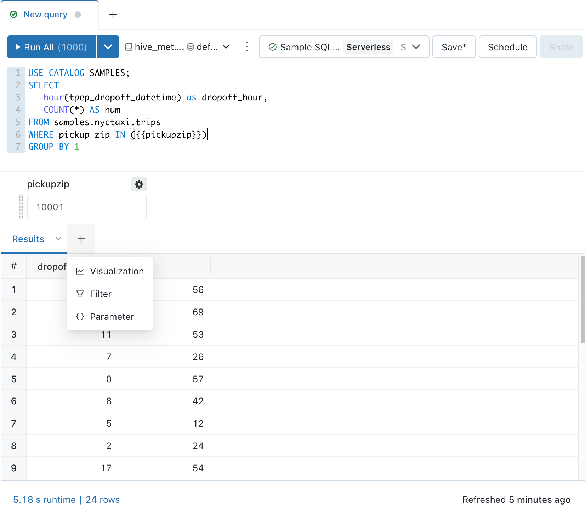
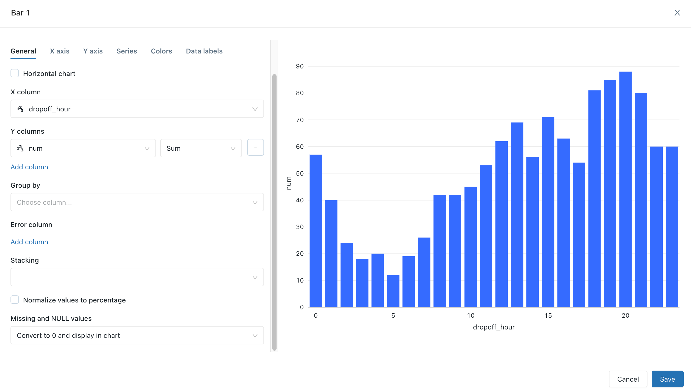
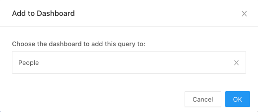
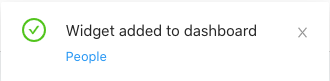

Visualization in Databricks SQL
Databricks has built-in support for charts and visualizations in both Databricks SQL and in notebooks. This page describes how to work with visualizations in Databricks SQL. For information about using visualizations in notebooks, see Visualizations in Databricks notebooks.
To view the types of visualizations, see visualization types.
Important
For information about a preview version of Databricks charts, see preview chart visualizations.
Create a visualization
Run the following query in SQL editor.
USE CATALOG SAMPLES; SELECT hour(tpep_dropoff_datetime) as dropoff_hour, COUNT(*) AS num FROM samples.nyctaxi.trips WHERE pickup_zip IN ({{pickupzip}}) GROUP BY 1
After running a query, in the Results panel, click + and then select Visualization.
In the Visualization Type drop-down, choose Bar.
Enter a visualization name, such as Dropoff Rates.
Review the visualization properties.
Click Save.
Visualization tools
If you hover over the top right of a chart in the visualization editor, a Plotly toolbar displays where you can perform operations such as select, zoom, and pan.
If you do not see the toolbar, your administrator has disabled toolbar display for your Databricks SQL instance.
Temporarily hide or show only a series
To hide a series in a visualization, click the series in the legend. To show the series again, click it again in the legend.
To show only a single series, double-click the series in the legend. To show other series, click each one.
Clone a visualization
To clone a visualization:
Open the visualization in the SQL editor.
Click
 in the visualization’s tab (not next to Edit Visualization).
in the visualization’s tab (not next to Edit Visualization).Click Duplicate.
Enable aggregation in a visualization
For bar, line, area, pie and heatmap charts, you add aggregation directly in the visualization rather than modifying the query to add an aggregation column. This approach has the following advantages:
You don’t need to modify the underlying SQL.
You can quickly perform scenario-based data analysis on the fly by modifying the aggregation.
The aggregation applies to the entire data set, not just the first 64,000 rows displayed in a table.
Aggregation is available in the following visualizations:
Line
Bar
Area
Pie
Heatmap
Histogram
Aggregations do not support combination visualizations, such as displaying a line and bars in the same chart. To create a new combination chart, clone a legacy visualization.
Table visualizations display only the first 64,000 rows.
To aggregate Y-axis columns for a visualization:
From the SQL editor, create a new visualization or edit an existing one.
If you see the message
This visualization uses an old configuration. New visualizations support aggregating data directly within the editor, you must re-create the visualization before you can use aggregation.Next to the Y-axis columns, select the aggregation type from the following for numeric types:
Sum (the default)
Average
Count
Count Distinct
Max
Min
Median
Or from the following for string types:
Count
Count Distinct
Your changes are applied to the preview of the visualization.
Click Save.
The visualization displays the number of rows that it aggregates.
In some cases, you may not want to use aggregation on Y-axis columns. To disable aggregation, click on the kebab menu next to Y columns and uncheck Use aggregation.
Customize colors for a visualization
Note
By default, if a dashboard uses a custom color palette, visualization color choices are ignored. To override this setting, see Use a different color palatte for a visualization.
You can customize a visualization’s colors when you create the visualization or by editing it.
Create or edit a visualization.
Click Colors.
To modify a color, click the square and select the new color by doing one of the following:
Click it in the color selector.
Enter a hex value.
Click anywhere outside the color selector to close it and save changes.
Add a visualization to a dashboard
Click the vertical ellipsis
button beneath the visualization.Select + Add to Dashboard.
Enter a dashboard name. A list of matching dashboards displays.
Select a dashboard.
Click OK. A pop-up displays with a link to the dashboard.

Download a visualization as a CSV, TSV, or Excel file
To download a visualization as a CSV, TSV, or Excel file, click the vertical ellipsis button next to the visualization name and select the type of download desired. If the visualization uses aggregations, the downloaded results are also aggregated. The downloaded results are from the most recent execution of the query that created the visualization.
Download a chart visualization as an image file
To download a local image file of a chart visualization, display the visualization tools and click the camera icon.
A png file is downloaded to your device.